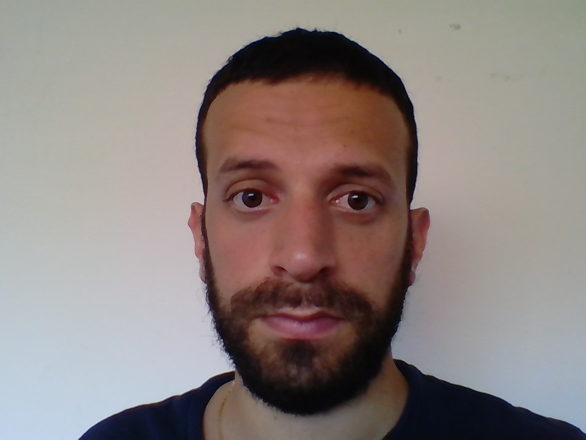

Homepage of Dr. Giacomo Paesani
Contact
|  | Address: Dipartimento di Informatica Sapienza, University of Rome Viale Regina Elena 295 Room G49 Rome Italy
Tel: + 39 3714514969 |
Assegnista di Ricerca (Research Fellow) in the (Dipartimento di Informatica) research group at Sapienza, University of Rome.
Bibliography
- (2024-2025) Research Fellow, in Computer Science at Sapienza, University of Rome, under the supervision of Professor Tiziana Calamoneri.
- (2022-2023) Research Fellow, in Computer Science at University of Leeds, under the supervision of Doctor Sebastian Ordyniak.
- (2017-2021) PhD, Doctor of Philosophy, in Computer Science at Durham University under the supervision of Professor Daniel Paulusma and Professor Matthew Johnson.
- (2013-2016) Master Degree, Laurea Magistrale, in Mathematics at the University of Rome, La Sapienza under the supervision of Professor Paul Wollan.
- (2009-2013) Bachelor Degree, Laurea Triennale, in Mathematics at the University of Rome, La Sapienza under the supervision of Professor Claudio Bernardi.
Research
My research interest lies in Structural and Algorithmic Graph Theory, now extending his scope to the Parametrized Complexity of problems in AI and ML.If you are interested in some of these topics please get in touch with me or with one of my co-authors.
Publications
Here is a full list of papers and other publications; See my profiles on dblp and Google Scholar.Talks and Meetings
This is a list of the talks I have given and conferences I have attended.Conference Organization
I have been in the Organising Committee of CIAC2025.Reviewer Work
I have been reviewer for conference papers (MFCS2018, MFCS2022, WG2023, IWOCA2024, MFCS2024) and journal papers (Discrete Applied Mathematics, Journal of Graph Theory, Theoretical Computer Science, Discussiones Mathematicae Graph Theory and The Computer Journal).Funding
- My Research Fellow position at Sapienza University of Rome has been funded by Assegni di Ricerca.
- My Research Fellow position at the University of Leeds has been funded by an EPSRC grant.
- My PhD at Durham University has been funded by a Durham Doctoral Studentship.
Teaching
I am teaching assistant of the Algorithmic Design (Progettazione di Algoritmi) course for the 2024/2025 academic year at Sapienza, University of Rome. All the problem sessions will be uploaded here. I have been teaching assistant for the same course also in the 2023/2024 academic year.I was demonstrator of the Mathematics for Computer Science module for three consecutive academic years at Durham University.
Curiosities and Quotes
My Erdős number is 3.
"The hardest thing of all is to find a black cat in a dark room. Especially if there is no cat." Confucius, 551BC - 479BC
"Audentes Fortuna iuvat." Virgilio, 70BC - 19BC
Last change: 19 May 2025.